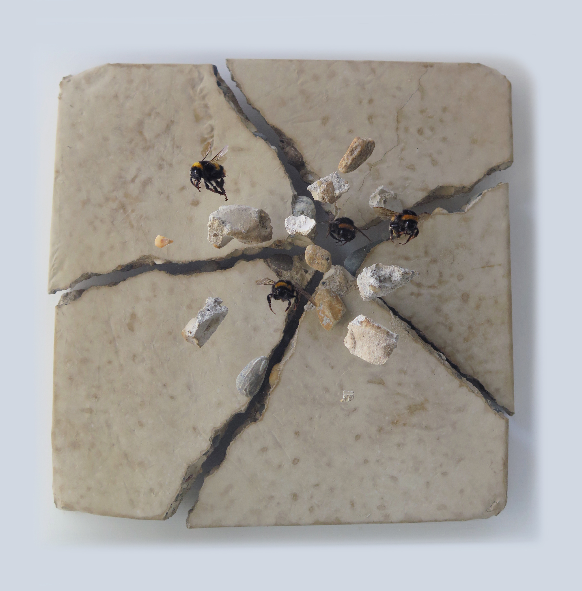
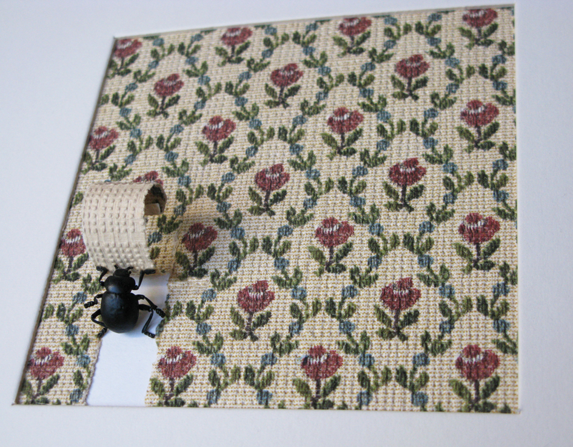
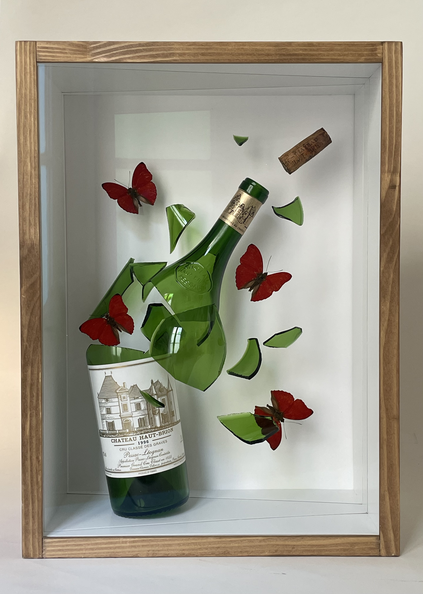
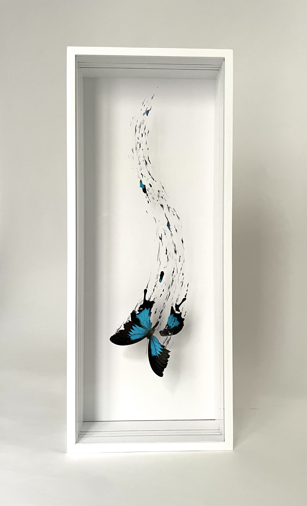
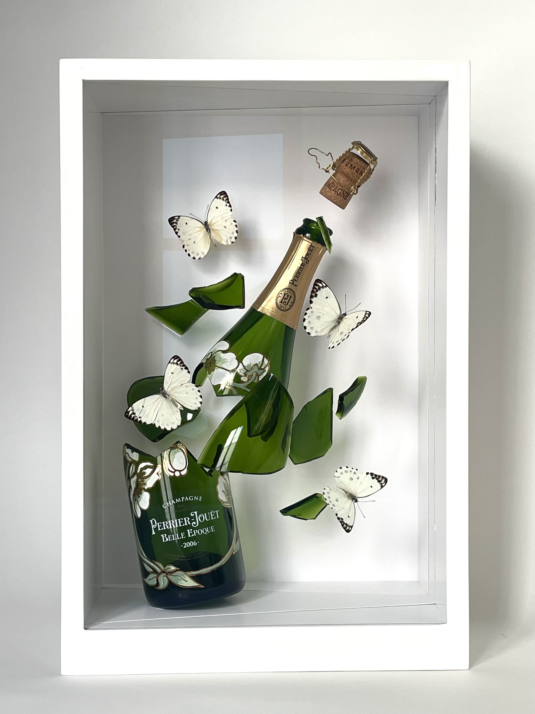
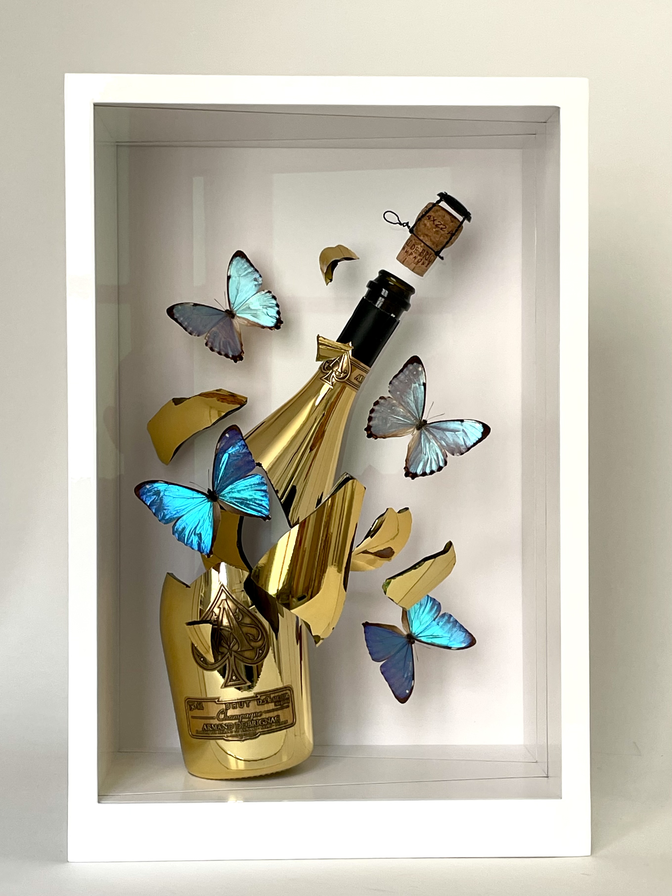

artist spotlight
Jean-Luc Maniouloux is a French artist whose work stages a dialogue between the natural world and the objects we construct. Insects appear as sudden interruptions within controlled, manufactured environments — not as symbols of morality, but as traces of a moment where stillness is broken and suspended.


His work constructs miniature theatres — improbable encounters staged between nature and the manufactured world. A bee cracks stone. A beetle disrupts chrome. Each collision is held in suspension, narrative tension frozen at its peak.
Like a three-dimensional photograph, movement is caught just at the edge of collapse.
His real subject is time. As Jean-Luc himself evokes through Lamartine: "Ô temps, suspend ton vol!" — O time, suspend your flight.

In his wine series, this logic shifts. Time becomes longer, deeper, more layered. The bottle is no longer a surface of rupture, but a vessel of transformation.
The butterfly appears here as a symbolic counterpart to wine itself — both shaped by time, cycles, and gradual change. The act of emergence, as butterflies break from the bottle, resonates with the moment wine is opened: a point where long processes of transformation reach their visible and irreversible threshold.


What has been contained is released. What follows is both intensity and ephemerality.
Wine and butterfly are not identical, but parallel forms of becoming. Both carry a temporal arc — from formation to transformation, and finally to disappearance. What remains is not permanence, but memory and sensation.
We invited Jean-Luc to share his thoughts on wine's place in his work, and how time shapes both his practice and the bottles he transforms.
"A large part of my works stage insects striving to destroy manufactured objects from a sanitized and constraining world. Nature takes back its destiny in an ephemeral moment where time seems suspended, like a 3D photograph. As the poet Lamartine wrote: 'O time, suspend your flight!'
With bottles, the subject is different. Time is an extremely important notion in the world of wine, but it is a long, deep, and almost philosophical time.
First, there is the time of nature. Wine is born from the annual cycle of the vine: seasons, weather, grape maturity. This is what we call the vintage. Then there is the time of transformation. Fermentation brings alcohol, then aging refines the aromas and structure. Finally, maturation allows the wine to reach its full potential over sometimes several decades.
In summary, wine is inseparable from time; it depends on time to be born, transforms within it, and carries its trace."
"The choice of butterflies is not insignificant. Beyond their undeniably aesthetic aspect, they are also a classic symbol, like wine, of metamorphosis over time. Like the caterpillar that becomes a butterfly, wine changes its nature with time.
But the butterfly also introduces an idea of fragility and the instant. A butterfly is ephemeral; in the same way, a great wine, once opened, does not last forever. It lives, evolves in the glass, then disappears."
"The bottle acts as a chrysalis — la bouteille agit comme une chrysalide — it encloses, protects, and when it opens, what comes out is no longer simply liquid but something transformed, almost spiritual.
I make this phenomenon visible by transforming it into a swarm of butterflies. The butterflies thus become memories, emotions, sensory impressions made visible — des souvenirs, des émotions, des impressions sensorielles devenues visibles."
"The explosion of the bottle shows that the wine experience can be intense, sometimes unpredictable, like a release of emotions after years of waiting and hope.
The butterflies transform the explosion into something poetic, a living cloud: what comes out of the bottle is not matter but something living, something felt."
"Grand crus like Romanée Conti, Pétrus, Angélus and others perfectly embody this notion of long time and emotion in tasting.
Moreover, I often work on commission. People who drink a great vintage for, say, a special occasion, entrust me with their bottle — alas, empty — to transform it into a work of art."


Great wine disappears. The moment doesn't have to.
Jean-Luc Maniouloux gives it wings.
Explore more of Jean-Luc Maniouloux's work at jeanlucmaniouloux.com